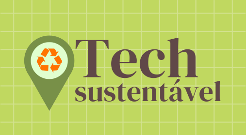

Uma iniciativa desenvolvido por estudantes, tem como principal objetivo coletar resíduos eletrônicos, facilitando o descarte correto desses materiais. Sabemos que o lixo eletrônico representa uma ameaça crescente ao meio ambiente devido ao seu potencial tóxico e difícil decomposição. Por isso, essa iniciativa busca não só reduzir o impacto ambiental causado por esses resíduos, mas também conscientizar a comunidade sobre a importância da reciclagem e do descarte adequado. Com pontos de coleta acessíveis, promovemos uma maneira prática e sustentável de lidar com a tecnologia descartada, transformando o que seria lixo em oportunidades de reaproveitamento e reciclagem.